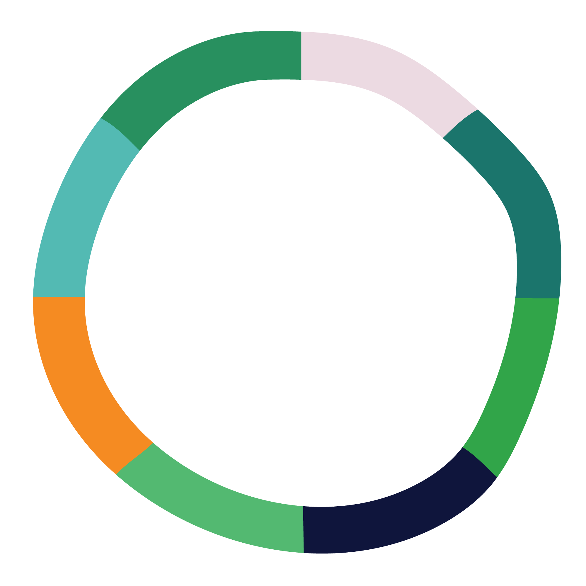
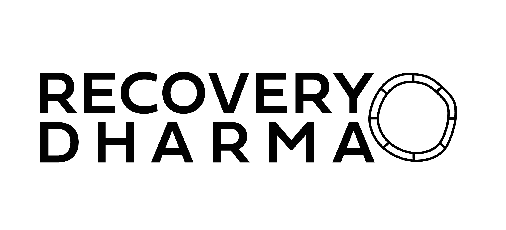

Awaken, Recover, Connect
Using Buddhist principles and practices to find freedom from the suffering of addiction, in a supportive community setting.
Find a MeetingAbout Our Community
Recovery Dharma Melbourne offers in-person meetings for those interested in using Buddhist principles and practices for recovery from addiction.
We believe that recovery is about finding our own inner wisdom and our own path. We provide a supportive community, using the practices of meditation, self-inquiry, wisdom, compassion, and community as tools for healing and liberation.
Our meetings are entirely peer-led and are open to everyone, regardless of whether you identify as a Buddhist, or are new to meditation or recovery.
